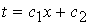
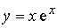

ЗАНЯТИЕ 5.3. ПРОИЗВОДНЫЕ ВЫСОКИХ ПОРЯДКОВ
Контрольные вопросы
- Что называется второй производной?
- Что называется производной -ого порядка?
Задачи
- Найти вторые производные от функции:
1) , 2) ,
3) ,
4) , 5) ,
6) .
- .
Найти
-
Найти
- Доказать, что
1) , 2) ,
3) , 4) ,
5)
6) ,
7) , где  ;
постоянные.
- Найти общее выражение для производной -ого порядка от функции:
1) , 2) ,
3)  , 4) .
Ответы
- 1) ,
2) ,
3) ,
4) ,
5) ,
,
6) ;
-
-
-
- 1) ,
2) ,
3) ,
4) .